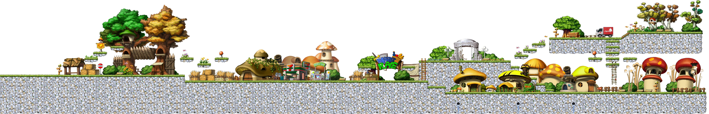
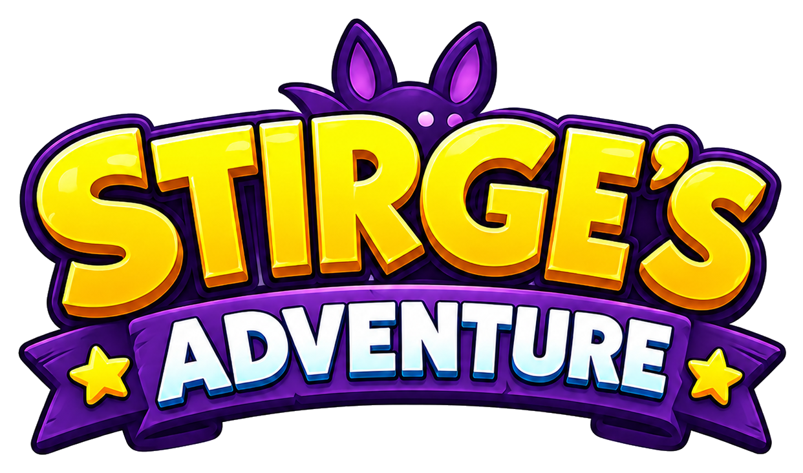

Tower Defense
Maple TD
MapleStory풍 맵, 스킬, 타워, 적 웨이브, UI 오버레이를 갖춘 대형 타워 디펜스 프로젝트입니다.
TypeScript
Vite
Canvas
Open Repository
Tower Defense
MapleStory풍 맵, 스킬, 타워, 적 웨이브, UI 오버레이를 갖춘 대형 타워 디펜스 프로젝트입니다.

Puzzle Shooter
몬스터 버블을 조준해 같은 종류를 맞추고 스테이지를 클리어하는 모바일 중심 퍼즐 슈터입니다.

Action Runner
맵 이동, 점프, 아이템, 랭킹 UI를 갖춘 모바일 대응 웹 액션 게임입니다.
Physics Action
Phaser 기반의 발사, 비행, 아이템, 미션, 강화 시스템을 갖춘 Nanaca Crash 스타일 웹 게임입니다.